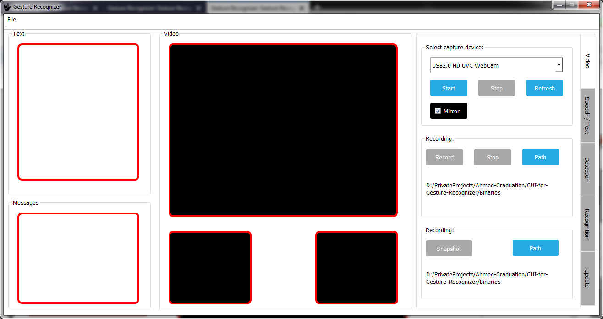

Gesture Recognizer is a computer program dedicated to recognizing hand gestures using computer vision and a colored clove by the user.
Graphical User Interface
The gui is shown in the figure below and it consists of the following sections:
- The "Text" section displays the text resulting from the recognition process.
- The "Messages" section displays application messages and logs.
- The "Video" section display camera feed and detection images.
- The "Video" tab contains video related options.
- The "Speech/Text" tab contains sound and text-to-speech controls.
- The "Detection" tab contains the controls related to the color thresholds and backgroud substration.
- The "Recognition" tab contains gesture recognition related controlls.
- The "Update" tab contains the controls related to the process of updating the program.

Usage Instructions
The most important steps to exploit the program properly are:
- Run the camera.
- Adjust color thresholds and set background and background sustraction threshold so that only appears in the left bottom video window.
- Select the desired recognition method.
- Start the recogition engine.
The Code
The code is divided into classes which belong mainly to five categories:
- The MainWindow class which puts things together.
- Classes for GUI design.
- Classes for processing.
- Classes for speech sythesizing.
- Classes for the update process.
GUI Design
The classes dedicated to the GUI design:
These classes are used to give the GUI dynamic and fluid effects. Style sheets are also used to decorate the controls.
Computer Vision And Image Processing
The classes dedicated to computer vision and image processing are:
Speech Synthesizing
The classes dedicated to speech synthesizing:
Update And Expansion Capability
The classes dedicated to the update process:
 1.8.13
1.8.13